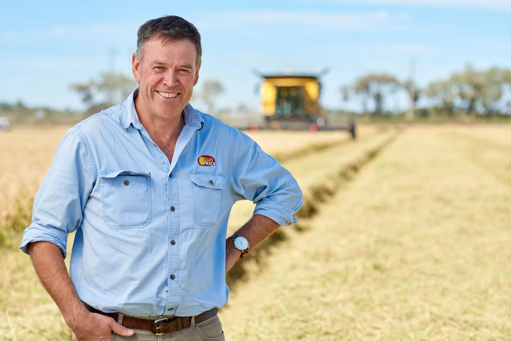
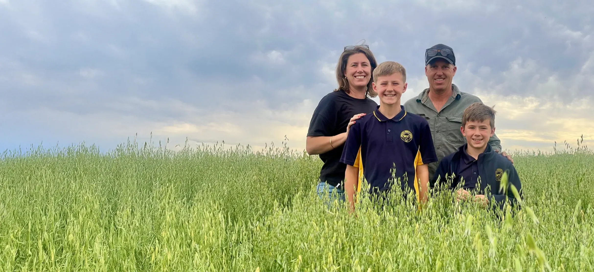
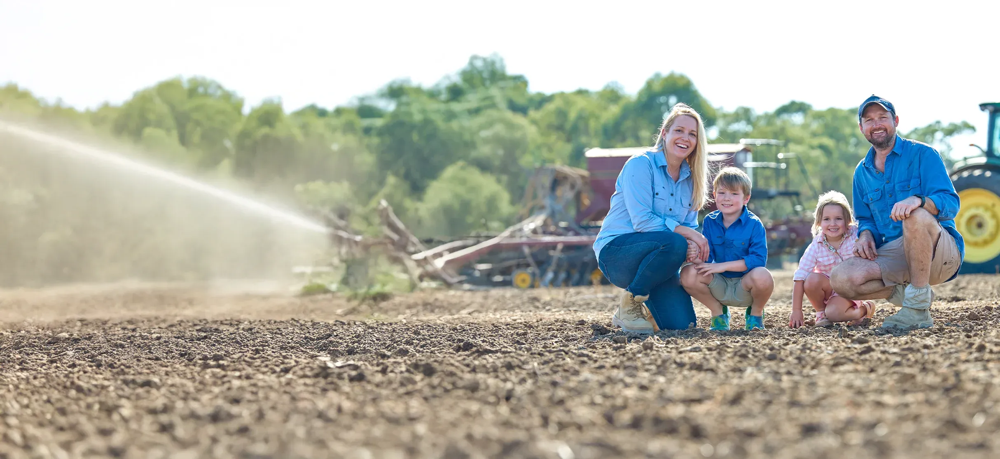
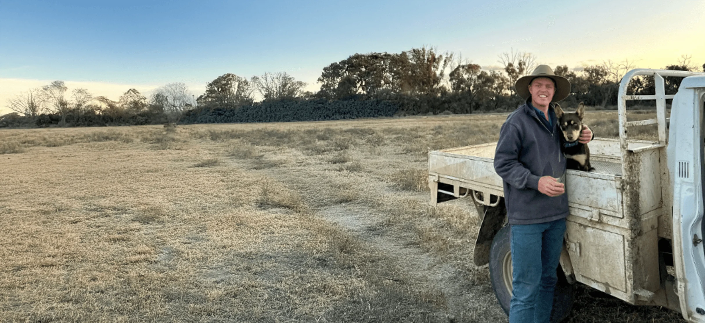
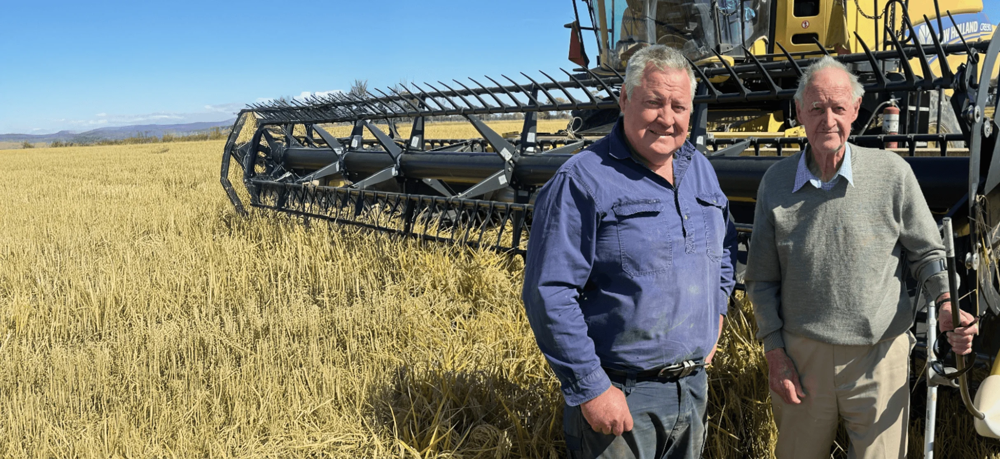

Grower Central
Become a SunRice Grower
Explore how rice could fit into your farm. Our Grower Services team can help you with seed selection, contracting, funding for crop inputs, insurance and payment options.

Grower stories
Meet our growers
Hear from the people growing rice in the Riverina, from growers in their first season to families who have been farming for generations.

Noorong, NSW
Heritage meets innovation
Michael and Felicia Chalmers
Three generations of rice growing give Michael and Felicia Chalmers a foundation for new ways of looking after their land and water.
Read the story
Pretty Pine, NSW
A community built on rice
Josh and Emily Small
On their mixed irrigation farm near Pretty Pine, fourth-generation growers Josh and Emily Small are using better data to make better decisions in the paddock.
Read the story
Gogeldrie, NSW
Commitment to innovation in rice farming
Garry and Marg Knagge
Garry and Marg Knagge are the third generation on their family’s farm near Leeton. They’ve made part of it a testing ground for new rice varieties.
Read the story
Moulamein, NSW
Coming home to grow
Hayden Dalitz
After a career in grain and logistics, Hayden Dalitz took on his first rice season at Edward Park Pastoral, a mixed rice and sheep farm near Moulamein.
Read the story
Southern NSW
From the farm to the boardroom
John Bradford
For John Bradford, a family tradition that began with a crop in 1969 has grown into a business spanning six properties and a role in industry leadership.
Read the storyThe SunRice partnership
Support for your farm
What you can expect as a SunRice grower, from pricing and payment options to research in the paddock.
Competitive pricing and payment options
SunRice aims to deliver strong paddy prices and offers payment options to suit different businesses. Contracted crops are backed by the SunRice Group’s business structure.
Market insights for Riverina rice
SunRice uses consumer and market research to build demand for branded Australian rice and find higher-value markets for the Riverina crop.
Financing and contracting
Eligible growers can apply for early access to financing for water and other crop inputs. Crop insurance and contract options help growers manage risk and choose when they are paid.
Research and agronomy
Research partners work on rice genetics, automation and aerobic growing systems to improve yield, water efficiency and resilience.
Pool profits to growers
Profits from Riverina rice sold through the Australian Rice Pool Business go back to growers. Growers carry market price risk and share in the gains when prices are favourable.
The SunRice difference
A voice in the business
SunRice growers can apply to become A Class Shareholders and have a say in the company’s direction, while continuing to benefit from paddy returns.